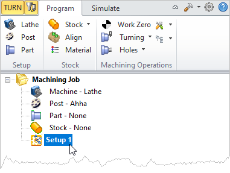

Setup defines the Turn coordinate system. CNC turning centers use the Cartesian coordinate system for programmed coordinates but they are typically different from that used in milling. Turning centers follow the convention that axis of rotation that is aligned with the spindle is designated as the Z axis. Secondly the axis perpendicular to this axis along which the tool travels to cut into the stock is designated the X axis. Thus the part is rotated about the Z-axis of the lathe machine. Moving the tool along the Z-axis provides the direction of feed and moving it along the X-axis provides the depth of cut.
The Turn Machine Coordinate System (CSYS) is displayed as a triad with Blue line representing the Z-axis, Red representing X-axis and Green representing the Y-axis. The WCS is displayed the same way as MCS with the length of the lines and arrows being smaller when compared to MCS.
|
|||||||||||||

By default Setup 1 is created when a new part is loaded. The Setup cannot be edited in the Machining Browser.  Setup1 in the Machining Browser |